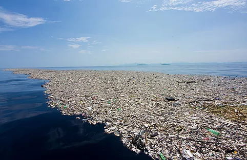

In the chart you can see how plastic and polystyrene pieces are the things that end up in the ocean from the list you can also see that everything on the list contains plastic. These percentages shows the amount of each thing item that is on the list and end up in the ocean.
